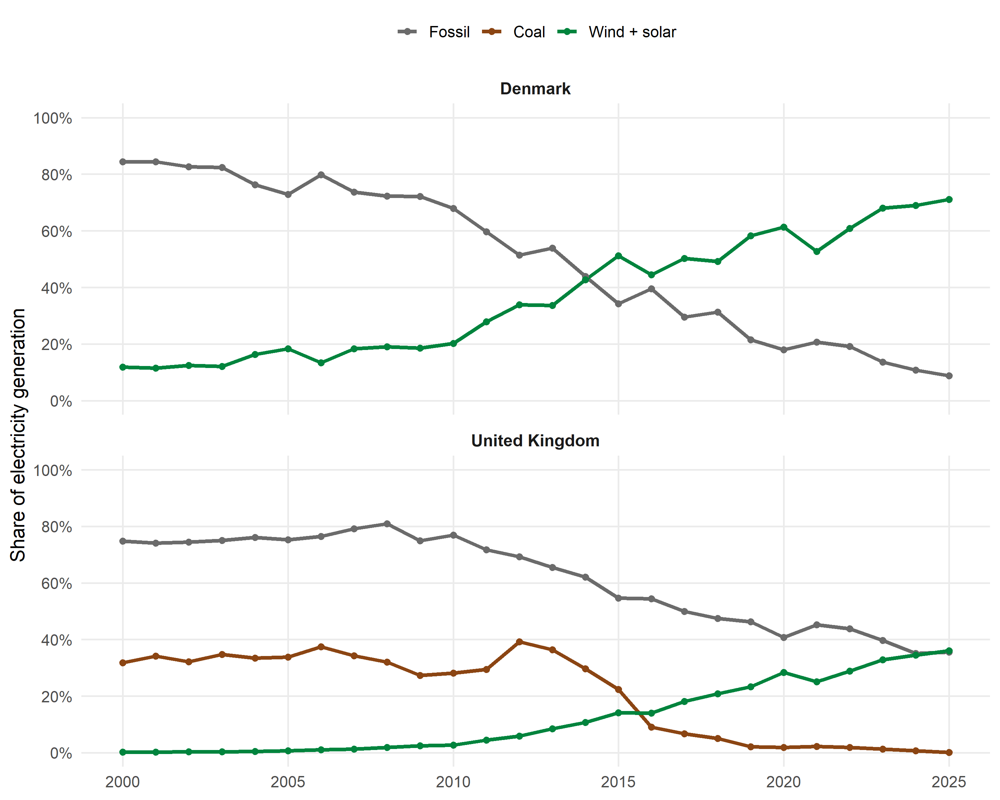
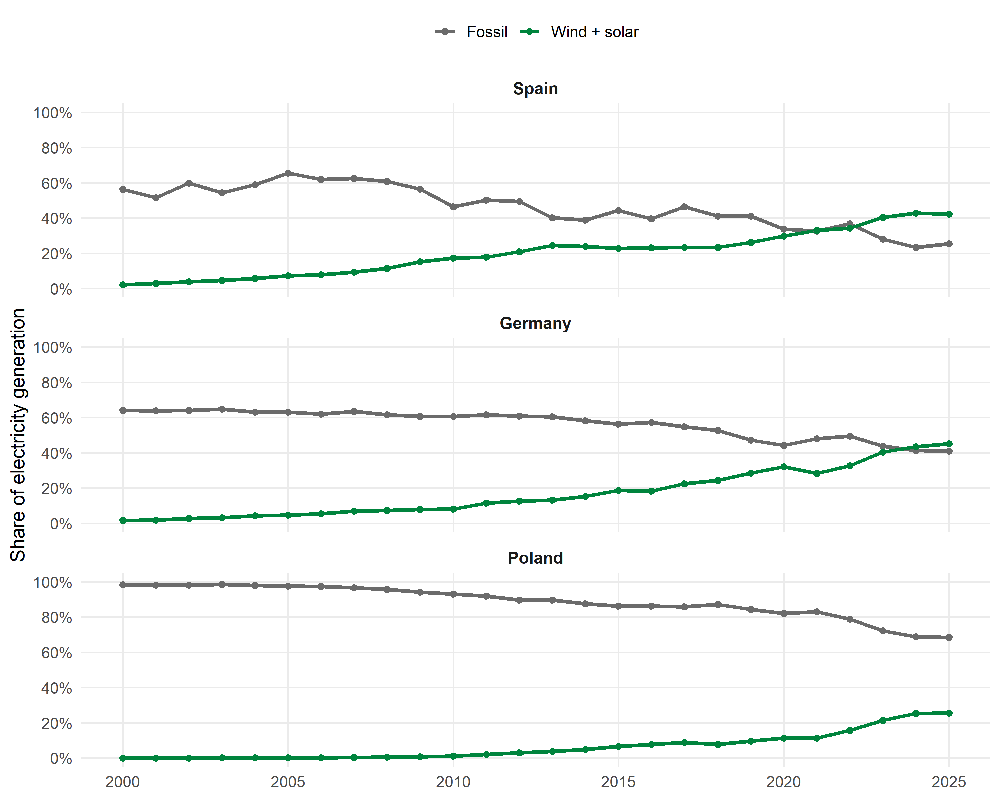
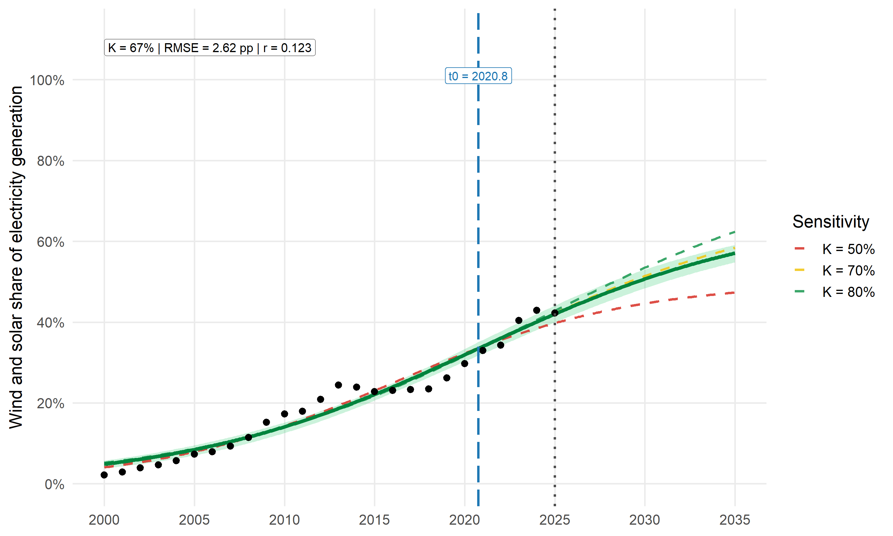
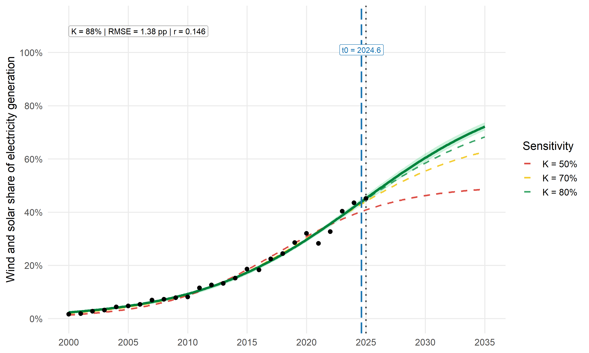
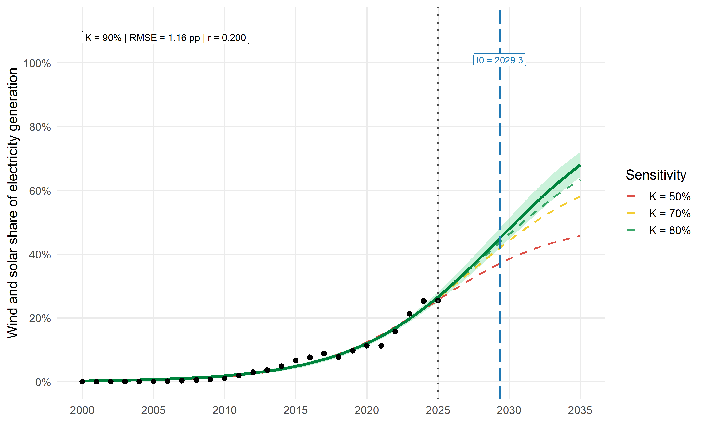
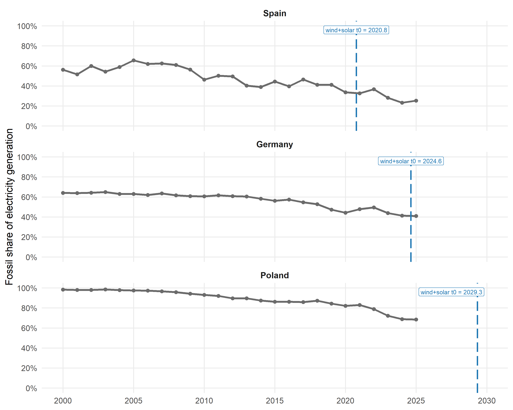
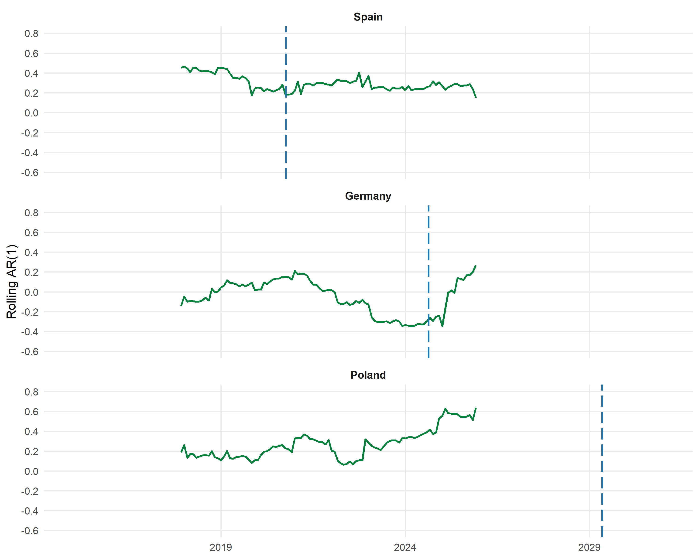
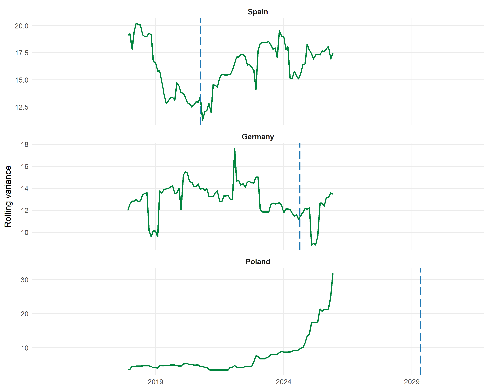

Chapter 11 Positive tipping points
Author: Emir Arif Kilic
Supervisor: Helmut Küchenhoff
Degree: Master
Abstract
Positive tipping points describe transitions where reinforcing feedbacks make desirable change increasingly self propelling. This chapter examines whether recent wind and solar trajectories in the three study countries show patterns consistent with such dynamics. Annual wind and solar generation shares from 2000 to 2025 are modelled using logistic S curves. Their fitted inflection years are then compared with changes in the fossil share.
Monthly fossil-share data is used to calculate rolling autocorrelation and variance. Denmark and the United Kingdom provide historical benchmark cases. These are examples of transitions that are already further advanced. Spain has an estimated inflection around 2021 while Germany reaches its fitted inflection near the end of the observed period. Poland has a projected inflection around 2029. The fossil share declines in all three countries although the early warning evidence is more mixed.
Introduction
Climate change mitigation requires a rapid transformation of energy systems. Cleaner electricity can reduce direct power sector emissions and support electrification in transport or heating. Energy systems are more than collections of technologies because firms and consumers influence how they develop. Infrastructure and policy also shape which options can expand.
It is easy to think of an electricity transition as a simple replacement of one technology by another. In reality firms make investment decisions under uncertainty and power plants remain in operation for many years. Electricity networks are also slow to change so existing infrastructure may continue to favour established technologies even when cleaner alternatives are available. Consumers may delay adoption when alternatives remain expensive or difficult to access. These conditions can slow the beginning of technological change (Lenton et al. 2023; Geels and Ayoub 2023).
Transitions do not always continue at a constant speed. Greater deployment can reduce costs through learning and attract new investment. Users also become more familiar with a technology over time. Recent research uses national growth histories to study how wind and solar trajectories develop and differ (Jakhmola et al. 2026).
Positive tipping points and feedback loops
A tipping point is the threshold beyond which change becomes self propelling and moves the system into a meaningfully different state. Before that threshold balancing feedbacks help preserve the existing state. Reinforcing feedbacks instead amplify change. A positive tipping point occurs when the reinforcing processes become strong enough to overcome the balancing ones (Lenton et al. 2026).
A low carbon transition moves an existing system toward technologies and practices with lower emissions. Positive tipping may accelerate the spread of these alternatives. It may also weaken the established fossil fuel system which is referred to here as the incumbent system. The two processes can occur together (Lenton et al. 2026).
One might think that rapid growth alone demonstrates a tipping point. However the central feature is that change improves the conditions for further change. Greater adoption may lower costs through learning by doing while better performance can increase demand. Infrastructure may expand as deployment grows and social acceptance can improve at the same time. These processes create reinforcing feedbacks that can make a transition increasingly self propelling (Lenton et al. 2026).
Several mechanisms can contribute to this process. Social contagion means that adoption by some actors encourages others to adopt. Increasing returns arise when greater deployment lowers costs. Coordination matters when a technology becomes more useful as related infrastructure spreads. Percolation describes change through connected groups while co evolution links technological and institutional change (Lenton et al. 2026).
A socio technical system combines technology with its surrounding actors and institutions. Geels and Ayoub describe seven interacting feedback loops linking technological development with firms or consumers. Policymakers and wider publics also shape the transition (Geels and Ayoub 2023).
| Feedback loop | Reinforcing process |
|---|---|
| Users and technology | Adoption supports learning, lower costs and improved performance |
| Firms, technology and users | Demand encourages investment, production and technical development |
| Firms and policymakers | Growing industries gain influence and obtain stronger policy support |
| Policymakers, technology and users | Policy supports deployment and observed outcomes support policy learning |
| Users and wider publics | Adoption increases familiarity, visibility and social acceptance |
| Wider publics and technology | Technical improvement strengthens public legitimacy and support |
| Wider publics and policymakers | Public attention encourages policy action and shapes expectations |
The loops can develop in different sequences. Technological deployment may occur before major changes in political commitment while another transition may begin with policy change. Public opinion can also shift before large technical changes become visible. Positive tipping is therefore better understood as a period of interacting developments than as one perfectly observable moment (Geels and Ayoub 2023).
Diffusion of innovation theory
Diffusion of innovation theory explains how a new technology spreads through a population or market. Adoption often begins with innovators and early adopters who accept more uncertainty and higher initial costs. Growth remains limited while the technology is unfamiliar or difficult to access. It accelerates when its advantages become easier to observe and a wider group becomes willing to adopt (Rogers 2003).
The cumulative adoption path often resembles an S curve. Its lower section represents early diffusion and the steep middle section shows rapid expansion. The upper section approaches saturation meaning the long run adoption level. The inflection point is where fitted growth is fastest.
National electricity generation shares do not directly measure the adopter groups described by Rogers. The theory instead motivates the aggregate diffusion pattern used here. Because cumulative diffusion is commonly represented by an S curve, the logistic models apply this structure to national wind and solar shares. They estimate the shape and timing of each country’s aggregate diffusion path. FTT Power is an example of a more detailed model of power sector change that includes induced technological development (Mercure 2012).
Research questions
RQ1. Do wind and solar generation shares in the three study countries follow S shaped diffusion paths and when do their fitted inflection points occur?
RQ2. How does the fossil share evolve relative to the fitted wind and solar inflection years?
RQ3. How do rolling autocorrelation and variance in monthly fossil-share residuals evolve relative to the fitted inflection years?
At first glance wind and solar growth may seem enough to describe the transition. However renewable generation could expand without reducing the fossil share if electricity demand also rises. The first question examines renewable diffusion and the second connects it with the incumbent system. The third considers whether short term fossil-share fluctuations change during the same period.
Benchmark transition cases
Denmark and the United Kingdom are used as benchmark cases. Here a benchmark is an example that helps interpret less mature transitions rather than a formal control group. Denmark represents long renewable expansion while the United Kingdom shows rapid incumbent decline. The annual electricity data comes from Ember (Ember 2026b).

FIGURE 11.1: Historical electricity transitions in Denmark and the United Kingdom. Coal is displayed separately for the United Kingdom.
Denmark
Denmark’s combined wind and solar share increased from around 12 percent in 2000 to more than 70 percent in 2025. The aggregate fossil share declined to around 10 percent. Growth was gradual during the early years and became stronger after 2010. Wind and solar later became the dominant part of the electricity mix. Denmark therefore represents a transition that has moved far beyond the early diffusion stage.
United Kingdom
Wind and solar generation in the United Kingdom was close to zero in 2000 and increased rapidly after 2010. Coal is used separately for the British benchmark because the aggregate fossil category hides its unusually rapid disappearance. The clearest transition concerns coal which generated more than 30 percent of British electricity during much of the early sample. Its share declined rapidly after 2012 and reached almost zero by 2025. Carbon pricing weakened the economic position of coal and contributed to falling profitability. Plant closures then made a return to earlier coal generation levels less likely (Sharpe and Lenton 2021).
Policy context
The countries entered the transition with different policy ambitions.
| Country | Electricity target for 2030 |
|---|---|
| Denmark | Renewable output covering 100 percent of electricity demand (Denmark.dk n.d.) |
| United Kingdom | At least 95 percent clean generation (GOV.UK 2024) |
| Spain | 81 percent renewable generation (MITECO 2024) |
| Germany | 80 percent of gross electricity consumption from renewables (BMWK n.d.) |
| Poland | At least 32 percent renewable electricity under the 2020 NECP (European Commission 2020) |
Data and country context
The analysis uses yearly and monthly electricity data from Ember (Ember 2026b, 2026a). The yearly dataset covers 2000 to 2025 and the main variable is the combined wind and solar share of national electricity generation. Aggregate fossil shares describe the incumbent electricity system.
The monthly dataset covers January 2015 to December 2025 and contains aggregate fossil shares for Spain, Germany and Poland. These observations are used to construct the monthly residual series for the early warning analysis.

FIGURE 11.2: Annual fossil and wind and solar shares of electricity generation in Spain, Germany and Poland from 2000 to 2025.
Spain shows the earliest convergence and the wind and solar share exceeds the fossil share near the end of the sample. Germany also approaches parity. Poland experiences rapid recent renewable growth although the fossil share remains dominant.
Statistical methods
Logistic diffusion model
The wind and solar share is represented using a logistic curve for each country.
\[ y_t = \frac{K} {1+e^{-r(t-t_0)}} +\varepsilon_t. \]
Here \(y_t\) is the wind and solar share in year \(t\). The parameter \(K\) is the saturation level and \(r\) controls the diffusion speed. The parameter \(t_0\) is the inflection year while \(\varepsilon_t\) is the difference between the observed and fitted value. At the inflection point the fitted share equals half of the saturation level.
\[ \hat{y}_{t_0}=\frac{K}{2}. \]
The fitted trajectory grows most rapidly around \(t_0\). Parameter estimates in macro level diffusion models can change systematically as observations are added (Van den Bulte and Lilien 1997). The model is therefore fitted over a grid of fixed saturation levels which limits instability when only part of the diffusion path is observed.
The candidate values for \(K\) begin one integer above the rounded-up observed maximum for each country and are capped at 90 percent. The preferred value of \(K\) is selected using the historical root mean squared error abbreviated as RMSE. RMSE measures the typical distance between the observed share and the fitted curve.
\[ RMSE = \sqrt{ \frac{1}{n} \sum_{t=1}^{n} (y_t-\hat{y}_t)^2 }. \]
Here \(n\) is the number of annual observations and \(\hat{y}_t\) is the fitted share. Alternative curves use saturation levels of 50 percent and 70 percent with an 80 percent curve included as well. They show how the assumed long run limit affects the projection.
Bootstrap bands
A residual bootstrap represents uncertainty around the selected curve. A residual is the observed value minus the fitted value. Residuals are sampled with replacement and added to the curve. For each bootstrap sample, \(r\) and \(t_0\) are re-estimated while the selected saturation level \(K\) remains fixed. The procedure produces 200 projected paths through 2035 whose 2.5th and 97.5th percentiles form the displayed band.
Fossil displacement
Fossil displacement refers here to a decline in the fossil share while the wind and solar share expands. The fitted renewable inflection years are placed on national fossil-share plots. This allows the timing of renewable acceleration to be compared with the development of the incumbent electricity system. A decline around the estimated inflection provides additional descriptive evidence of wider system change.
Early warning indicators
A critical transition is a large shift between system states. Systems approaching one may recover more slowly from disturbances, a process called critical slowing down. Greater persistence may appear as rising lag one autocorrelation while larger fluctuations may appear as rising variance (Scheffer et al. 2009). Autocorrelation relates current and earlier residuals whereas variance measures their spread.
A simple autoregressive process can be written as
\[ x_t = \alpha x_{t-1} +\varepsilon_t. \]
Here \(x_t\) is the current monthly fossil-share residual and \(x_{t-1}\) is the residual from the previous month. The parameter \(\alpha\) measures how strongly the previous disturbance remains in the system, while \(\varepsilon_t\) represents the new disturbance occurring in month \(t\). Because the data are monthly lag one corresponds to a one month gap.
\[ AR(1)= \operatorname{corr}(x_t,x_{t-1}). \]
The variance is
\[ \operatorname{Var}(x)= \frac{1}{n-1} \sum_{t=1}^{n} (x_t-\bar{x})^2. \]
Here \(n\) is the number of months in the rolling window and \(\bar{x}\) is the mean residual within that window. Because the residuals are measured in percentage points, variance is measured in squared percentage points.
Monthly fossil shares are separated into seasonal, trend and residual components using robust seasonal trend decomposition. The residual contains the short term fluctuations left after seasonality and trend are removed. AR(1) and variance are estimated within rolling windows of 36 months. Similar indicators have been applied to technological transitions to examine whether an incumbent technology is losing stability (Mercure et al. 2026).
Results
Wind and solar diffusion
| Country | Saturation K | Diffusion rate r | Inflection year t0 | RMSE |
|---|---|---|---|---|
| Spain | 67 | 0.123 | 2021 | 2.618 |
| Germany | 88 | 0.146 | 2025 | 1.380 |
| Poland | 90 | 0.200 | 2029 | 1.160 |
Spain has a selected saturation level of 67 percent. Its estimated diffusion rate is 0.123 and the fitted inflection occurs around 2020.8. The RMSE is 2.62 percentage points. Germany has a selected saturation level of 88 percent and an estimated diffusion rate of 0.146. Its fitted inflection occurs around 2024.6 with an RMSE of 1.38 percentage points.
Poland has the fastest estimated diffusion rate at 0.200. Its fitted inflection occurs around 2029.3 and the selected saturation level reaches the imposed maximum of 90 percent. This upper boundary becomes important when interpreting the later part of the Polish projection.
Spain

FIGURE 11.3: Observed and fitted wind and solar electricity shares in Spain. The shaded area is the residual bootstrap band. Dashed curves use alternative saturation assumptions.
Spain shows gradual early growth followed by stronger expansion after 2010. The selected model estimates the inflection around 2020.8, which lies within the observed period, so Spain represents an observed inflection case. Similar historical fits can therefore produce different long run projections.
Germany

FIGURE 11.4: Observed and fitted wind and solar electricity shares in Germany. The fitted inflection occurs near the end of the observed period.
Germany follows the selected logistic trajectory closely. The estimated inflection year is 2024.6 and lies near the final observed year. Germany therefore represents a near term inflection case although only a short part of the trajectory after the fitted inflection is observed.
Poland

FIGURE 11.5: Observed and fitted wind and solar electricity shares in Poland. The fitted inflection occurs after the observed period.
Poland begins with almost no wind and solar generation. Growth becomes visible after 2010 and accelerates after 2020. The projected inflection around 2029 lies outside the observed period. Its selected saturation level also reaches the maximum considered value so the later projection is especially sensitive to the assumed upper limit.
Fossil displacement

FIGURE 11.6: Aggregate fossil electricity shares and fitted wind and solar inflection years in Spain, Germany and Poland.
Spain’s fossil share falls from around 60 percent to below 30 percent and its renewable inflection occurs during this wider decline. Germany’s fossil share falls more clearly after 2015. Its renewable inflection occurs close to parity between the wind and solar share and the fossil share. Poland’s fossil share also declines rapidly in the later years although it remains close to 70 percent in 2025.
The projected Polish renewable inflection occurs after the observed fossil series. All three countries therefore show renewable growth alongside fossil decline but they remain at different stages of the transition.
Early warning signals
Autocorrelation

FIGURE 11.7: Rolling lag one autocorrelation of monthly fossil-share residuals. Vertical blue lines indicate the fitted wind and solar inflection dates.
Spain does not show a sustained rise in autocorrelation, and its final value of 0.151 is below the valid-window mean of 0.298. Germany shows a recent increase and ends at 0.266 compared with a period mean of minus 0.052. Poland shows the highest final autocorrelation at 0.638 while its period mean is 0.271.
Variance

FIGURE 11.8: Rolling variance of monthly fossil-share residuals. Vertical blue lines indicate the fitted wind and solar inflection dates.
Spain’s final variance is 17.5 compared with a period mean of 16.2. Germany ends at 13.5 compared with a mean of 12.9. Poland shows a much stronger increase. Its final variance reaches 31.9 while the period mean is 7.5.
| Country | Indicator | Selected K | Selected t0 | Period mean | Final value |
|---|---|---|---|---|---|
| Spain | Rolling AR(1) | 67 | 2021 | 0.298 | 0.151 |
| Spain | Rolling variance | 67 | 2021 | 16.208 | 17.467 |
| Germany | Rolling AR(1) | 88 | 2025 | -0.052 | 0.266 |
| Germany | Rolling variance | 88 | 2025 | 12.946 | 13.463 |
| Poland | Rolling AR(1) | 90 | 2029 | 0.271 | 0.638 |
| Poland | Rolling variance | 90 | 2029 | 7.501 | 31.914 |
The Polish series shows the clearest joint increase in autocorrelation and variance. Germany shows a smaller change while Spain remains comparatively stable.
Discussion
The three countries show S shaped wind and solar paths at different stages. Spain appears to have passed its fitted inflection, Germany reaches it near the end of the sample and Poland remains before its projected inflection. The results therefore do not suggest one common European transition date.
The fossil share declines as the wind and solar share expands, including a rapid recent fall in Poland despite its continued fossil dependence. Demand, cross border trade and changes in nuclear or hydropower may also affect these shares. The comparison is therefore descriptive rather than causal.
Uncertainty remains. Poland reaches the upper limit of the saturation grid and each annual series contains only 26 observations. The bootstrap bands cover uncertainty within the selected logistic model, not alternative model families. Denmark and the United Kingdom are contextual benchmarks rather than a formal comparison group.
Conclusion
Denmark and the United Kingdom illustrate two advanced transition paths: long renewable expansion in Denmark and rapid coal decline in the United Kingdom. Both show how a new system can grow while the incumbent weakens.
Spain represents an observed inflection case and its wind and solar share has overtaken the fossil share. Germany’s fitted inflection lies close to 2025. Poland shows rapid renewable growth, but its inflection remains projected and fossil electricity still dominates.
Renewable growth occurs alongside declining fossil shares in all three countries. The early warning evidence is less uniform: Poland shows the strongest increases, Germany shows partial evidence and Spain little movement. These indicators remain exploratory and do not provide a common signal.
Overall, the results are more consistent with accelerating renewable diffusion than with one directly observed tipping threshold. Spain appears more advanced, Germany is near its fitted inflection and Poland remains at an earlier stage despite rapid recent change. Positive tipping is therefore better understood as a process than one universal date. Future trajectories may differ because the projections depend on the fitted model and current conditions.